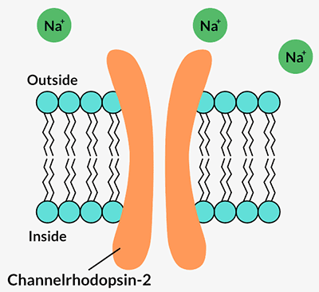
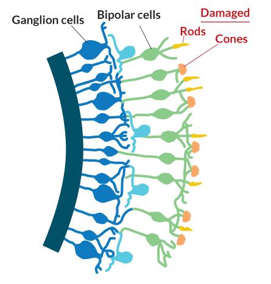
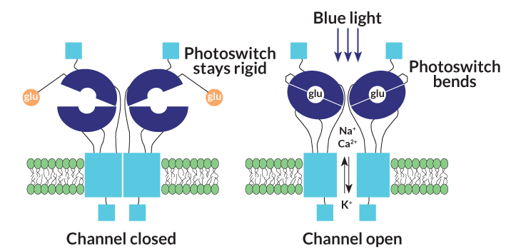

<html><head></head></html><body>
<article about="/article/how-rewire-eye" typeof="rNews:Article schema:NewsArticle" class="node node-openpublish-article node-published node-not-promoted node-not-sticky author-ayeagersciencenewsorg odd clearfix full-node" id="node-openpublish-article-190270">
  
    <div class="article-terms">
          <div class="article-type"><div class="field field-name-field-article-type field-type-taxonomy-term-reference field-label-hidden"><div class="field-items"><div class="field-item even">Feature</div></div></div></div>
          <div class="article-section">
    <div class="field field-name-field-op-section-term field-type-taxonomy-term-reference field-label-hidden"><div class="field-items"><div class="field-item even"><a href="/search?tt=88" typeof="skos:Concept" property="rdfs:label skos:prefLabel" datatype="">Genetics</a>,</div><div class="field-item odd"><a href="/search?tt=99" typeof="skos:Concept" property="rdfs:label skos:prefLabel" datatype="">Technology</a>,</div><div class="field-item even"><a href="/search?tt=133" typeof="skos:Concept" property="rdfs:label skos:prefLabel" datatype="">Health</a></div></div></div>
        </div>
    </div>
  

      
    <header>
    <h1 class="node-title">How to rewire the eye</h1>
  </header>
    
  <span property="rnews:name schema:name" content="How to rewire the eye" class="rdf-meta element-hidden"></span>

  <div class="content clearfix">
    <span class="print-link"></span><div class="field field-name-field-sn-subtitle">
    <div class="field-items">
        <div class="field-items-even">
            <h2>Transforming nerve cells into light-sensing cells aims to restore sight in some blind patients</h2>
        </div>
    </div>
</div>
<div class="field field-name-field-op-author field-type-node-reference field-label-hidden"><div class="field-items"><div class="field-item even" rel="rnews:creator schema:creator"><div class="view view-article-related-content view-id-article_related_content view-display-id-block_1 view-dom-id-c9b33413ff116a9eae13ace5f2f83e32">
            <div class="view-header">
      By    </div>
  
  
  
      <div class="view-content">
        <div class="views-row views-row-1 views-row-odd views-row-first views-row-last">
      
  <span>        <span><a href="/author/tina-hesman-saey">Tina Hesman Saey</a></span>  </span>  </div>
    </div>
  
  
      <div class="attachment attachment-after">
      <div class="view view-article-related-content view-id-article_related_content view-display-id-attachment_1">
        
  
  
      <div class="view-content">
        <div>
      
          <span class="field-content">2:10pm, May 15, 2015</span>    </div>
    </div>
  
  
  
  
  
  
</div>    </div>
  
  
  
  
</div></div></div></div>
      <div class="field field-name-field-op-main-image field-type-image field-label-hidden"><div class="field-items"><div class="field-item even" rel="rnews:associatedMedia schema:associatedMedia" resource="https://www.sciencenews.org/sites/default/files/styles/article-main-image-large/public/main/articles/opto_opener.png?itok=FWK3Qv4U"></div></div></div><div class="field field-name-field-op-caption field-type-text-long field-label-hidden"><div class="field-items"><div class="field-item even"><p><strong>SEEING THE LIGHT</strong> &nbsp;The brain’s window on the visual world is a multilayered tissue at the back of the eye called the retina. Light-detecting rods and cones sit at the very back of the tissue. They pass information to the brain via bipolar cells and ganglion cells. Humans and some animals have sharp vision thanks to the fovea, a window in the retina that offers direct access to the cones.</p></div></div></div><div class="field field-name-field-sn-copyright field-type-text-long field-label-hidden"><div class="field-items"><div class="field-item even"><p>Eye: Tony Graham/Getty Images, adapted by J. Hirshfeld; webvision.med.utah.edu, adapted by J. Hirshfeld</p></div></div></div><div class="field field-name-field-magazine-ref field-type-node-reference field-label-hidden"><div class="field-items"><div class="field-item even"><div class="view view-article-issue-info view-id-article_issue_info view-display-id-block view-dom-id-07cdb5daf73f2130b3902a86a29da5eb">
        
  
  
      <div class="view-content">
        <div class="views-row views-row-1">
      
  <div class="views-field views-field-field-magazine-ref">    <span class="views-label views-label-field-magazine-ref">Magazine issue: </span>    <span class="field-content"><a href="https://www.sciencenews.org/sn-magazine/may-30-2015">Vol. 187, No. 11, May 30, 2015</a></span>  </div>  </div>
    </div>
  
  
  
  
  
  
</div></div></div></div><div class="block-sn-ad-blog-wrapper">
<div class="block-sn-ad-blog-inner">
<div class="ad">Sponsor Message</div><div class="block block-sn-ad block-openpublish-article-node-ad block-sn-ad-openpublish-article-node-ad odd block-without-title" id="block-sn-ad-openpublish-article-node-ad">
  <div class="block-inner clearfix">
            
    <div class="content clearfix">
      <!-- AdSpeed.com Serving Code 7.9.5 for [Zone] SN-Drupal-300 300x250 --><iframe width="0" height="0" src="https://g.adspeed.net/ad.php?do=html&amp;zid=47245&amp;wd=300&amp;ht=250&amp;target=_top" frameborder="0" scrolling="no" style="display: none !important; visibility: hidden !important; opacity: 0 !important; background-position: 300px 250px;">&lt;a href="https://g.adspeed.net/ad.php?do=clk&amp;amp;zid=47245&amp;amp;wd=300&amp;amp;ht=250&amp;amp;pair=as" target="_top"&gt;&lt;img style="border:0px;" src="https://g.adspeed.net/ad.php?do=img&amp;amp;zid=47245&amp;amp;wd=300&amp;amp;ht=250&amp;amp;pair=as" alt="i" width="300" height="250"/&gt;&lt;/a&gt;</iframe><!-- AdSpeed.com End -->    </div>
  </div>
</div>
</div>
</div><div class="field field-name-body field-type-text-with-summary field-label-hidden clearfix"><div class="field-items"><div class="field-item even" property="rnews:articlebody schema:articleBody"><p>A man who had been blind for 50 years allowed scientists to insert a tiny electrical probe into his eye.</p><p>The man’s eyesight had been destroyed and the photoreceptors, or light-gathering cells, at the back of his eye no longer worked. Those cells, known as rods and cones, are the basis of human vision. Without them, the world becomes gray and formless, though not completely black. The probe aimed for a different set of cells in the retina, the ganglion cells, which, along with the nearby bipolar cells, ferry visual information from the rods and cones to the brain.</p><p>No one knew whether those information-relaying cells still functioned when the rods and cones were out of service. As the scientists sent pulses of electricity to the ganglion cells, the man described seeing a small, faint candle flickering in the distance. That dim beacon was a sign that the ganglion cells could still send messages to the brain for translation into images.</p><p>That 1990s experiment and others like it sparked a new vision for researcher Zhuo-Hua Pan of Wayne State University in Detroit. He and his colleague Alexander Dizhoor wondered if, instead of tickling the cells with electricity, scientists could transform them to sense light and do what rods and cones no longer could.</p><p>The approach is part of a revolutionary new field called optogenetics. Optogeneticists use molecules from algae or other microorganisms that respond to light or create new molecules to do the same, and insert them into nerve cells that are normally impervious to light. By shining light of certain wavelengths on the molecules, researchers can control the activity of the nerve cells.</p><p>Optogenetics is a powerful tool for probing the inner workings of the brain (<a href="https://www.sciencenews.org/article/let-there-be-light-1"><em>SN: 1/30/10, p. 18</em></a>). In mice, researchers have used optogenetics to study feeding behavior (<em>SN: 3/7/15, p. 8</em>), map aggression circuits (<em>SN: 3/21/15, p. 18</em>) and even alter memories&nbsp;<em>(<a href="https://www.sciencenews.org/article/laser-light-rewrites-memories-mice">SN: 10/4/14, p. 6</a>;&nbsp;<a href="https://www.sciencenews.org/article/flash-light-implants-false-memories-mice">SN: 8/24/13, p. 18</a></em>).&nbsp;</p><p></p><aside class="floating-sidebar floating-sidebar-right clearfix"><h4>Open sesame</h4><div class="floating-sidebar-copy"><p><div class="inline-image-wrapper"></div></p><p>Optogenetics involves inserting an algae protein into a nerve cell’s membrane. In the dark, the protein, called channelrhodopsin-2, or ChR2, is closed. When blue light hits it, the channel opens and allows ions to flow in. That triggers the cell to send a signal to other cells.</p><p><em>Credit: Eye: John Martin Barrett </em>et al/Visual Neuroscience<em> 2014 (CC-BY-NC-SA 3.0), adapted by J. HIRSHFELD</em></p></div></aside><p></p><p>After years of work with animals, researchers are now poised to insert optogenetic molecules into the retinal cells of people. The aim is to restore vision in those whose rods and cones don’t work.</p><p>“It makes sense that the organ that is light sensitive would benefit from [optogenetics] first,” says José-Alain Sahel, director of the Vision Institute in Paris. He is involved in one of two efforts to bring optogenetics out of the lab and into the eye clinic.</p><p>Studies in people could begin next year.</p><h3><strong>Circumvent the damage </strong></h3><p>Optogenetics is, at its heart, a gene therapy. Traditional gene therapy places a healthy copy of a mutated or damaged gene into the cells of a person with an inherited condition. The healthy copy is first packed into a virus. The virus delivers the gene to the “broken” cells and unloads its cargo. Once inside the cell, the gene produces functional copies of the proteins that the original mutations damaged, and the cell starts working again.</p><p>This type of gene therapy has famously been used to treat children born with faulty immune systems (<a href="https://www.sciencenews.org/article/gene-therapy-treats-children-rare-diseases"><em>SN: 8/10/13, p. 19</em></a>). It has also restored some vision in people with a rare type of inherited blindness called Leber congenital amaurosis (<em>SN: 5/24/08, p. 8; See '<a href="#anchor">Unafraid of the Dark</a>'</em>).</p><p>That type of blindness, however, is the absolute best-case scenario for gene therapy, says neuroscientist Botond Roska. LCA patients eligible for gene therapy still have light-gathering rods and cones in their retinas but the cells don’t work properly because they have a mutation in a gene called <em>RPE65</em> (one of a dozen gene mutations that can cause LCA). Introducing the normal version of the gene allows the rods and cones to function again. However, two studies published online this month in the <em>New England Journal of Medicine</em> suggest that even in patients who experience vision improvements after gene therapy for LCA, the photoreceptors continue to die and vision deteriorates over time (<a href="https://www.sciencenews.org/article/gene-therapy-blindness-dims-bit"><em>SN Online: 5/3/15</em></a>). This could mean that, for long-term benefit, another approach is needed.</p><p>Most people with inherited blindness don’t even have the hope of temporary restoration. Mutations in any of more than 250 genes may lead to blindness, says John Flannery, a cell and molecular biologist at the University of California, Berkeley. Gene therapy is currently impractical or impossible for most of those diseases, he says.</p><p>Approximately 200,000 people in the United States have inherited retinal diseases that affect the rods and cones, according to estimates from the Foundation Fighting Blindness. Once those photoreceptors are gone, there’s no bringing them back, says Roska, of the Friedrich Miescher Institute for Biomedical Research in Basel, Switzerland.</p><p>The optogenetics approach that Pan and others are studying circumvents the missing photoreceptors. That means it differs from traditional gene therapy in important ways: It doesn’t fix broken genes, so the therapy should work regardless of which of the 250 genes are causing problems. And instead of trying to resurrect dead or damaged photoreceptors, the scientists aim to transform relay cells into ersatz photoreceptors.</p><p>Pan and Dizhoor began kicking around the idea of making bipolar and ganglion cells light sensitive in 2000. In principle it sounded simple: Just move the rods’ light-sensing protein, known as rhodopsin, to the other cells. But rhodopsin doesn’t work alone. It is part of a light-driven machine in the eye that has more than a dozen parts, says Dizhoor, a molecular biologist now at Salus University in Elkins Park, Pa. “Technically, it’s just unfeasible” to move that many cogs, he says. The researchers needed a simple molecule that could make ganglion and bipolar cells sensitive to light.</p><p>The breakthrough came two years later when scientists discovered a light-responsive protein called channelrhodopsin in a single-celled algae called&nbsp;<em>Chlamydomonas reinhardtii</em>.</p><p></p><aside class="floating-sidebar floating-sidebar-right clearfix"><h4>Retina redux</h4><div class="floating-sidebar-copy"><p><div class="inline-image-wrapper"></div></p><p>Many inherited blindness conditions, plus eye diseases such as macular degeneration, cause rods and cones in the retina to die or be stripped of their light-detecting parts. The bipolar cells and ganglion cells that remain are functional long after the photoreceptors have gone, making those cells prime targets for optogenetic therapy.</p><p><em>Credit: webvision.med.utah.edu, adapted by J. Hirshfeld</em></p></div></aside><p></p><p>Channelrhodopsins form channels in a cell’s outer membrane. When certain wavelengths of light hit the protein, the channel opens and lets positively charged ions flow into the cell. That flow of energy is a nerve cell’s signal to talk to its neighbors and to the brain. Pan and Dizhoor immediately recognized its potential.</p><p>“We thought, ‘Wow! This is the molecule we’ve been waiting for,’ ” Pan says.</p><p>They lost little time packing a gene encoding a specific channelrhodopsin, ChR2, into a virus that could infect ganglion cells in blind mice. The researchers reported in <em>Neuron</em> in 2006 that the protein could make the cells light sensitive and send a message to the brain in response to blue light shone into the eyes of the mice (<em>SN: 4/8/06, p. 211</em>).</p><h3><strong>A gaggle of ganglion cells </strong></h3><p>The experiment was just the first step toward restoring vision, though. Researchers have had to wrangle with the issue of which of the cells — ganglion or bipolar — might restore the most vision. Each type of cell has its pros and cons.&nbsp;</p><p>To understand the dilemma requires some clarity on how the eye works. Light enters the eye through the pupil and is focused on the retina, a thin, multilayer tissue in the back of the eye.</p><p>Light first encounters the retinal ganglion cells. These nerve cells have long tails that bundle together to form the optic nerve and send messages to the brain about what the eye detects. They aren’t normally light sensitive. Neither are the bipolar cells, the next layer of cells that light hits. Below both these layers, at the very back of the eye, are the light-detecting rods and cones. Bipolar cells collect light information from these photo­receptor cells and pass it to the ganglion cells, which send it on to the visual processing areas in the brain. Unlike mouse eyes, human eyes have a tiny window called the fovea where bipolar cells and ganglion cells sit off to the side, allowing light to shine directly on the photoreceptors.</p><p>The ganglion cells are easiest to reach, which makes them appealing for optogenetics. But human eyes contain about 20 different types of retinal ganglion cells, each of which may convey slightly different visual information to the brain.</p><p>Variety may spice up life, but it’s potentially the main strike against ganglion cells as a target for optogenetics. That’s because the viruses used to ferry optogenetic molecules cannot distinguish between the various ganglion cells. Optogeneticists and gene therapists favor viruses called adeno-associated viruses for delivering their cargo. The viruses come in a variety of packages that determine which types of cells they can infect, but no one has devised a package that will dock only with particular ganglion cell types.</p><p>The problem, then, is that optogenetic proteins could be made, and activated, in all 20 ganglion-cell varieties at the same time, including ones that send contradictory information to the brain, says Sahel, in Paris. “It’s like saying yes and no to the same thing,” he says.</p><h3><strong>Bipolar expedition</strong></h3><p>Dizhoor has always thought the bipolar cells were the way to go. After all, they are the natural middlemen between the photoreceptors and the ganglion cells. If their connections with the ganglion cells still hold in degenerated retinas, activating the bipolar cells, which come in two major varieties, should give a less noisy picture of the world than 20 types of ganglion cells chattering at once.</p><p>Bipolar cells are described as either ON or OFF. ON bipolar cells are activated when light levels increase, like when you switch on a lamp in a dark room or walk outside into bright sunlight. OFF bipolar cells get excited when light levels decrease. In 2008, Roska and his colleagues put ChR2 into ON bipolar cells in blind mice, enabling them to see patterns about half as well as mice with normal sight (<a href="https://www.sciencenews.org/article/let-there-be-light-0"><em>SN: 5/24/08, p. 8</em></a>).</p><p>So far, researchers haven’t demonstrated that targeting bipolar cells paints a clearer picture of the world than targeting ganglion cells does. Plus, bipolar cells are hard to reach. The viruses have to be injected under the retina, risking detaching the fragile tissue.</p><p>No matter which cells they target, researchers have gotten so good at using optogenetics to restore vision in blind mice that every experiment is virtually guaranteed to work, Roska says. New researchers in his lab often mistake blind mice that have had optogenetic therapy for normally sighted mice. Unfortunately, experience with mice doesn’t make moving the technology into humans any easier, he says. “You have to reengineer everything you have.”</p><p><em>Story continues below infographic</em></p><p></p><aside class="floating-sidebar floating-sidebar-left clearfix" style="width:100%; float:none;"><h4>Keep away</h4><div class="floating-sidebar-copy"><p style="text-align: center;"><div class="inline-image-wrapper"></div></p><p>By tweaking a protein involved in nerve cell communication, scientists hope to make a more sensitive photoswitch for optogenetic therapy. In the dark, the engineered protein, a light-gated ionotrophic glutamate receptor, or LiGluR, keeps glutamate out of reach. With light, the photoswitch bends so the protein can grab glutamate and open an ion channel. The cell then signals its neighbors that light exists.</p><p><em>Credit: Stephanie Szobota </em>et al/Neuron<em> 2007, adapted by J. Hirshfeld</em></p></div></aside><p></p><p>Sahel, Roska and a few other scientists have teamed up to form a company in Paris called GenSight Biologics. The goal is to develop gene therapy and optogenetic therapy for people with one of the most common genetic forms of blindness, a retina-degrading disease called retinitis pigmentosa, and for people with some rare eye diseases. Both GenSight and RetroSense Therapeutics, headquartered in Ann Arbor, Mich., hope to begin clinical trials by the end of  2016. Though they are using similar approaches, they may not end up targeting the same cells.</p><p>GenSight is still weighing its options. RetroSense is aiming its optogenetic therapy at the ganglion cells, largely because those cells are easy to access via injection into the center of the eye.</p><p>Retinal ganglion cells also have staying power. In retinitis pigmentosa, the photoreceptors are the first to go. Usually, the rods succumb, then the cones. Later, bipolar cells may also die off. But even “very late in the disease process, the ganglion cells are still there,” says RetroSense’s chief medical officer, Peter Francis. If the approach works, patients who get optogenetic therapy targeted at their retinal ganglion cells may be able to hold on to their new vision for decades, he says.</p><h3><strong>A monochromatic response</strong></h3><p>Which cells are made light sensitive isn’t the only factor in determining how well people may be able to see. The optogenetic molecules themselves are important.</p><p>The photoreceptors that detect light in human eyes operate over a wide range of intensities from dim starlight to a glaring day at the beach, says Flannery of UC Berkeley. And most people can see a rainbow of colors, thanks to the cones’ natural light-harvesting proteins. But the light-activated molecules used in optogenetics are far more limited; they are not as sensitive to different degrees of brightness and they detect only certain wavelengths, and thus colors, of light. “It’s a bit like a bike with one gear, compared with a bike with 20 gears,” Flannery says. The current molecules, he adds, don’t work very well at twilight.</p><p>Flannery’s collaborator Ehud Isacoff, a UC Berkeley neuroscientist, is among researchers devising light-activated molecules to be more flexible than channelrhodopsin and the other proteins that are borrowed from microbes.</p><p>In December, Flannery and collaborators reported in the <em>Proceedings of the National Academy of Sciences</em> that they had tested a light-activated version of a protein called an ionotrophic glutamate receptor. In bipolar cells and other cells, when the communication chemical glutamate docks with the receptor, a channel opens and ions flow into the cell. The researchers coupled the receptor protein to a molecule called a photo­switch. In the dark, the photoswitch holds glutamate away from its docking port. But when blue light hits the engineered receptor, called LiGluR, the photoswitch allows glutamate to dock and open the channel.</p><p>Placing the LiGluR protein in either the retinal ganglion cells or in the ON bipolar cells of blind mice restored the rodents’ vision. The mice could see well enough to scurry for the shadows when placed in a brightly lit area. They could also navigate a water maze.</p><p>Flannery, Isacoff and colleagues at the University of Pennsylvania also inserted the LiGluR protein into retinal ganglion cells of blind dogs. The cells became responsive to light, but the team is still testing whether the therapy helps the dogs see.</p><p>LiGluR has some pros and cons, says Isacoff. It requires a constant supply of the chemical photo­switch, which will probably mean weekly eye injections. On the positive side, patients could receive upgrades as the photoswitch is improved, without needing additional gene therapy. And if optogenetic-powered vision proves to be confusing or uncomfortable for patients, doctors could just stop injecting the chemical. Other optogenetic molecules have no such off switch, Isacoff says.</p><p>Because current optogenetic proteins respond only to specific wavelengths of light, people who undergo optogenetic therapy will probably see in shades of gray. Pan and others are tweaking the molecules to extend the range of wavelengths to restore some color vision. That goal is a long way off, Pan says.</p><p>Even with improved light-sensing molecules in place, people who get optogenetic therapy will probably need additional help. Special goggles may be needed to boost ambient light levels and tune the wavelengths to optimally activate the proteins.</p><p>The brain will probably need some training as well. “We’re providing a new language to the retina, and it will take time to learn,” Roska says.</p><p>RetroSense’s Francis isn’t worried that patients won’t be able to understand what they are seeing. “The brain is extremely good at adapting to visual input and making sense of those images,” he says. At least that has been the experience of people who have electrodes implanted on the retinal ganglion cells.</p><p>Those early experiments with electrodes that showed the blind man a dim candle eventually evolved into retinal implants. Last year, a company called Second Sight Medical Products of Sylmar, Calif., began selling its “bionic eye” in the United States. The device uses 60 electrodes, each stimulating several ganglion cells in the retina. It’s enough to allow blind people to navigate and make out windows and doors. Some say they can see tables in their path and even dishes on the table. It’s a big improvement, Sahel says, but it is nowhere near normal vision.</p><h3><strong>Partial restoration</strong></h3><p>Optogenetics researchers think they can do better. There are about 1 million ganglion cells and 10 million bipolar cells in the retina. If even 10 percent of those cells can be made light sensitive, that’s a potentially huge gain in resolution over the implants. Of course, no one knows if more signal is actually better. It may just increase the noise the brain must decipher.</p><p><a name="anchor" id="anchor"></a>Even if everything goes swimmingly, patients shouldn’t expect to see perfectly, Sahel says. “It won’t reach the sophistication of normal vision. It’s partial restoration.”</p><p>The researchers are moving swiftly but cautiously toward trying the therapy in people.</p><p>Safety tests in primates look promising so far, but researchers don’t have final results and can’t move into human trials until they know it is safe. “We want to be first, but we want to be first to do things right,” Sahel says.</p><hr><h3><strong>Unafraid of the Dark</strong></h3><p><span class="image-caption-container image-caption-container-right" style="display: inline-block; height: auto; text-align: right; width: 445px; float: right;"><div class="inline-image-wrapper"></div><span style="display: none;" class="image-caption"></span><div class="inline-image-caption"> Foundation Fighting Blindness</div></span>When Allison Corona (right) and her friends played the card game Uno, they had a rule that green and blue were the same color. The rule was instituted because Corona, 23, has an inherited form of blindness called Leber congenital amaurosis.</p><p>The light-gathering cells in her retinas don’t work properly due to a mutation in a gene called <em>RPE65</em>. As a result, Corona’s world was indistinct. During the day, she could see light, but not shadows. She saw colors, but had trouble telling them apart. After sunset the world went dark. Corona was afraid to schedule college classes after 3 p.m. because she couldn’t navigate unfamiliar surroundings alone.</p><p>But Corona has one of the few conditions doctors can treat with traditional gene therapy. In 2012, she participated in a clinical trial at the University of Pennsylvania in which doctors injected viruses carrying healthy copies of the<em>RPE65</em> gene into her eyes. The viruses delivered the gene to retinal cells, where it makes a normal version of the protein that Corona otherwise lacks.&nbsp;</p><p>Shortly after the surgery, her vision changed. At first, the light was overwhelming and painful.</p><p>“I just sat in the dark,” Corona says. “I wore sunglasses everywhere. I looked like a rapper.”</p><p>But she adjusted, and her sight improved dramatically, although she is still legally blind.</p><p>Today, she plays Uno without the green-equals-blue rule. But she’s most excited about having night vision. “Now fear isn’t a thing,” she says. “I’m able to move around at night. That’s a big accomplishment.”</p><p>Despite recent reports of people with LCA eventually losing their light sensitivity, Jean Bennett, a U Penn molecular geneticist who helped conduct the study that Corona was involved in, says her early data indicate the improvements will last. <em>— Tina Hesman Saey</em></p><hr><p><em>This article appears in the May 30, 2015, issue with the headline, "Seeing the light: Transforming nerve cells into photoreceptors to restore vision."</em></p></div></div></div><div class="field-group-format group_article_information field-group-div group-article-information clearfix speed-fast effect-none"><div class="field field-name-field-article-citation field-type-text-long field-label-above">
      <div class="field-label">Citations</div>
    <div class="field-items">
          <div class="field-item even"><p>S.G. Jacobson et al. <a href="http://dx.doi.org/10.1056/NEJMoa1412965" target="_blank">Improvement and decline in vision with gene therapy in childhood blindness</a>. <em>New England Journal of Medicine</em>. Published online May 3, 2015. doi: 10.1056/NEJMoa1412965.</p><p>J. W. B. Bainbridge et al. <a href="http://www.nejm.org/doi/full/10.1056/NEJMoa1414221" target="_blank">Long-term effect of gene therapy on Leber’s congenital amaurosis</a>. <em>New England Journal of Medicine</em>. Published online May 4, 2015. doi: 10.1056/NEJMoa1414221.</p><p>A. Bi et al. <a href="http://www.cell.com/neuron/abstract/S0896-6273(06)00176-0?_returnURL=http%3A%2F%2Flinkinghub.elsevier.com%2Fretrieve%2Fpii%2FS0896627306001760%3Fshowall%3Dtrue" target="_blank">Ectopic expression of a microbial-type rhodopsin restores visual responses in mice with photoreceptor degeneration</a>. <em>Neuron</em> Vol. 50, April 6, 2006, p. 23. doi: 10.1016/j.neuron.2006.02.026</p><p>B. M. Gaub et al. <a href="http://www.pnas.org/content/111/51/E5574.abstract" target="_blank">Restoration of visual function by expression of a light-gated mammalian ion channel in retinal ganglion cells or ON-bipolar cells</a>. <em>Proceedings of the National Academy of Sciences</em> Vol. 111, December 23, 2014, p. E5574. doi: 10.1073/pnas.1414162111.</p><p>P. S. Lagali et al. <a href="http://www.nature.com/neuro/journal/v11/n6/abs/nn.2117.html" target="_blank">Light-activated channels targeted to ON bipolar cells restore visual function in retinal degeneration</a>. <em>Nature Neuroscience</em> Vol. 11, June 2008, published online April 27, 2008, p. 667. doi:10.1038/nn.2117.</p></div>
      </div>
</div>
<div class="field field-name-field-article-reading field-type-text-long field-label-above">
      <div class="field-label">Further Reading</div>
    <div class="field-items">
          <div class="field-item even"><p>C. Brownlee. <a href="https://www.sciencenews.org/article/see-blind-mice-algae-gene-makes-sightless-eyes-sense-light">See Blind Mice: Algae gene makes sightless eyes sense light</a>. <em>Science News</em> Vol. 169, April 8, 2006, p. 211.</p><p>T. H. Saey. <a href="https://www.sciencenews.org/article/let-there-be-light-0">Let there be light</a>. <em>Science News</em> Vol. 173, May 24, 2008, p.8.</p><p>G. Dickey. <a href="https://www.sciencenews.org/article/blind-mice-see-again">Blind mice see again</a>. <em>Science News</em> Vol. 178, July 17, 2010, p. 11.</p><p>L. Sanders. <a href="https://www.sciencenews.org/article/laser-light-rewrites-memories-mice">Laser light rewrites memories in mice</a>. <em>Science News</em> Vol. 186, October 4, 2014, p. 6.</p><p>J. Shugart. <a href="https://www.sciencenews.org/article/flash-light-implants-false-memories-mice">A flash of light implants false memories in mice</a>. <em>Science News</em> Vol. 184, August 24, 2013, p. 18.</p><p>T. H. Saey. <a href="https://www.sciencenews.org/article/let-there-be-light-1">Let there be light</a>. <em>Science News</em> Vol. 177, January 30, 2010, p. 18.</p><p>T. H. Saey. <a href="https://www.sciencenews.org/article/gene-therapy-treats-children-rare-diseases">Gene therapy treats children with rare diseases</a>. <em>Science News</em> Vol. 184, August 10, 2013, p. 19.</p><p>T. H. Saey. <a href="https://www.sciencenews.org/article/gene-therapy-blindness-dims-bit">Gene therapy for blindness dims a bit</a>. Science News Online, May 3, 2015.</p></div>
      </div>
</div>
</div><span property="rnews:name schema:name" content="How to rewire the eye" class="rdf-meta element-hidden"></span>      </div>

  <div class="clearfix">
          <nav class="links node-links clearfix"><ul class="links inline"><li class="print_html first"><a href="/print/190270" title="Display a printer-friendly version of this page." class="print-page" onclick="window.open(this.href); return false" rel="nofollow">Printer-friendly version</a></li><li class="print_mail last"><a href="/printmail/190270" title="Send this page by email." class="print-mail" rel="nofollow">Send by email</a></li></ul></nav>
          </div>
</article></body>